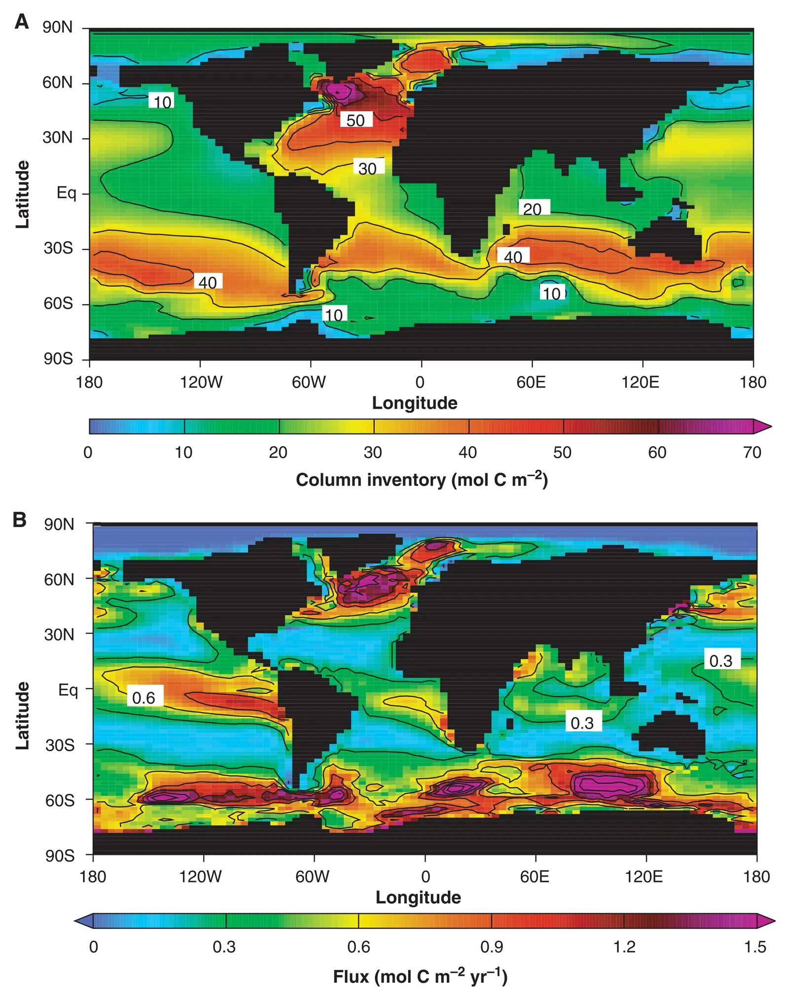

The role of the Southern Ocean in uptake and storage of anthropogenic carbon dioxide
Key finding. An ocean-climate model reproducing observation-based estimates shows high fluxes of anthropogenic CO2 into the Southern Ocean but very low storage there, indicating a subordinate role for deep convection — the carbon is carried out of the region primarily by isopycnal transport.

What question did this research address?
The Southern Ocean absorbs a disproportionate share of the CO2 the ocean takes from the atmosphere. How it does so matters, because different mechanisms respond differently to a changing climate.
This paper asked which mechanism dominates — deep convection, which mixes surface water downward, or isopycnal transport, which moves water along surfaces of constant density.
What did we find?
The model matches observation-based estimates of ocean storage of anthropogenic CO2, which is what makes its mechanism attribution credible rather than merely internally consistent.
Uptake and storage come apart. The Southern Ocean takes up a great deal of anthropogenic carbon while storing very little of it locally.
That combination implies deep convection plays a subordinate role in the present-day Southern Ocean. The dominant pathway is isopycnal transport, moving carbon along constant density surfaces out of the region.
The mechanism carries a vulnerability. If climate change reduces the density of Southern Ocean surface waters, isopycnal surfaces that currently outcrop at the sea surface may become isolated from the atmosphere, tending to diminish Southern Ocean carbon uptake.
Why does it matter?
The finding identifies a feedback that operates through ocean physics rather than chemistry or biology. Warming and freshening the Southern Ocean surface could reduce the ocean's ability to absorb CO2, leaving more in the atmosphere.
It also shows why measuring where carbon is stored is not enough to learn how it got there. A region can be a major gateway for carbon uptake while holding almost none of it, and an inventory alone would miss that entirely.
Citation, data, and code
Ken Caldeira and Philip B. Duffy (2000). The role of the Southern Ocean in uptake and storage of anthropogenic carbon dioxide. Science 287, 620-622.